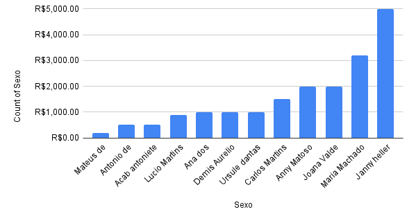

O que é um dado
Dado é uma informação sobre algo ou alguém. Isso nos ajuda a não só entender melhor esse algo ou alguém, mas também a facilitar pesquisas. Um dado em si, só pode ser representado como um número ou uma string(um texto), mas um conjunto de dados pode ser representado, talvez por um grafico de várias formas e formatos ou uma tabela.
Vamos supor um exemplo um cadastro de pessoas, e o quanto elas compram em uma certo mercado. Vamos definir nessa tabela várias propriedades como o sexo, o nome, a idade, a quantidade que gasta no total no mercado por mês e qual é a categoria de produto que ela mais comprou em um ano nesse mercado.
Tabela
| Nome | Sexo | Idade | Valor total pago para o mercado | Principal tipo de produto, que a pessoa compra |
|---|---|---|---|---|
| Joana Valde | F | 21 | R$ 2.000 | Carne |
| Carlos Martins | M | 45 | R$ 1.500 | Vegetais |
| Maria Machado | F | 18 | R$ 3.200 | Doces |
| Ana dos Santos | F | 35 | R$ 1.000 | produtos de limpeza |
| Janny Heller | F | 21 | R$ 5.000 | ingredientes de cozinha |
| Anny Matoso | F | 35 | R$ 2.000 | carne |
| Lucio Martins | M | 56 | R$ 900 | carne |
| Demis Aurelio | M | 31 | R$ 1.000 | Doces |
| Antonio de Morais | M | 25 | R$ 500 | Carne |
| Mateus de La'france | M | 21 | R$ 200 | Frutas |
| Acab Antoniete | M | 30 | R$ 500 | ingredientes de cozinha |
| Ursule dantas | F | 31 | R$ 1.000 | produtos de limpeza |
Por exemplo a partir da coluna de preço, em ordem do menor para o maior.
| Nome | Sexo | Idade | Valor total pago para o mercado | Principal tipo de produto, que a pessoa compra |
|---|---|---|---|---|
| Mateus de La'france | M | 21 | R$ 200 | Frutas |
| Antonio de Morais | 25 | R$ 500 | Carne | |
| Acab Antoniete | 30 | ingredientes de cozinha | ||
| Lucio Martins | 56 | R$ 900 | carne | |
| Ana dos Santos | F | 35 | R$ 1.000 | produtos de limpeza |
| Demis Aurelio | M | 31 | Doces | |
| Ursule Dantas | F | 31 | produtos de limpeza | |
| Carlos Martins | M | 45 | R$ 1.500 | Vegetais |
| Anny Matoso | F | 35 | R$ 2.000 | Carne |
| Joana Valde | 21 | |||
| Maria Machado | 18 | R$ 3.200 | Doces | |
| Janny Heller | 21 | R$ 5.000 | ingredientes de cozinha |
Gráficos
Podemos utilzar também gráfico, porém quando se trata de gráficos só podemos usar como base dois valores, de uma tabela, claro isso caso seja um gráfico bidimensional. Vamos mostrar alguns exemplos de gráficos aqui.
Gráfico de Coluna
Qualitativos(nomes, porcentagens e afins) no eixo horizontal. E quantitativos(expressam uma quantidade) no eixo vértical.
aqui temos uma de gráfico de coluna do nome e o preço que cada um gasta
e aqui uma imagem de um gráfico do sexo, e o quanto cada um gasta, em média.
Gráfico de Pizza
Representa em um círculo a porcentagem de algo qualitativo ou quantitativo. Por exemplo vamos mostrar aqui uma imagem de cada tipo de produto sobre a porcentagem de pessoas em que ela é a principal dos usuario.
Linha
Também temos o gráfico de linha, que infelizmente com nosso exemplo não é possível utilizar com nosso exemplo. Pois o gráfico de linha representa a evolução de um certo item de forma quantitativa ao longo de uma data.
Para isso criamos uma tabela especial:
| Ano | Lucro |
|---|---|
| 2018 | 250 milhões |
| 2019 | 500 milhões |
| 2020 | 450 milhões |
| 2021 | 900 milhões |
| 2022 | 800 milhões |
| 2023 | 1 bilhão |
Como podemos ver os dados podem ser representados dessa forma, mas agora vamos ver qual é o sentido prático disso.